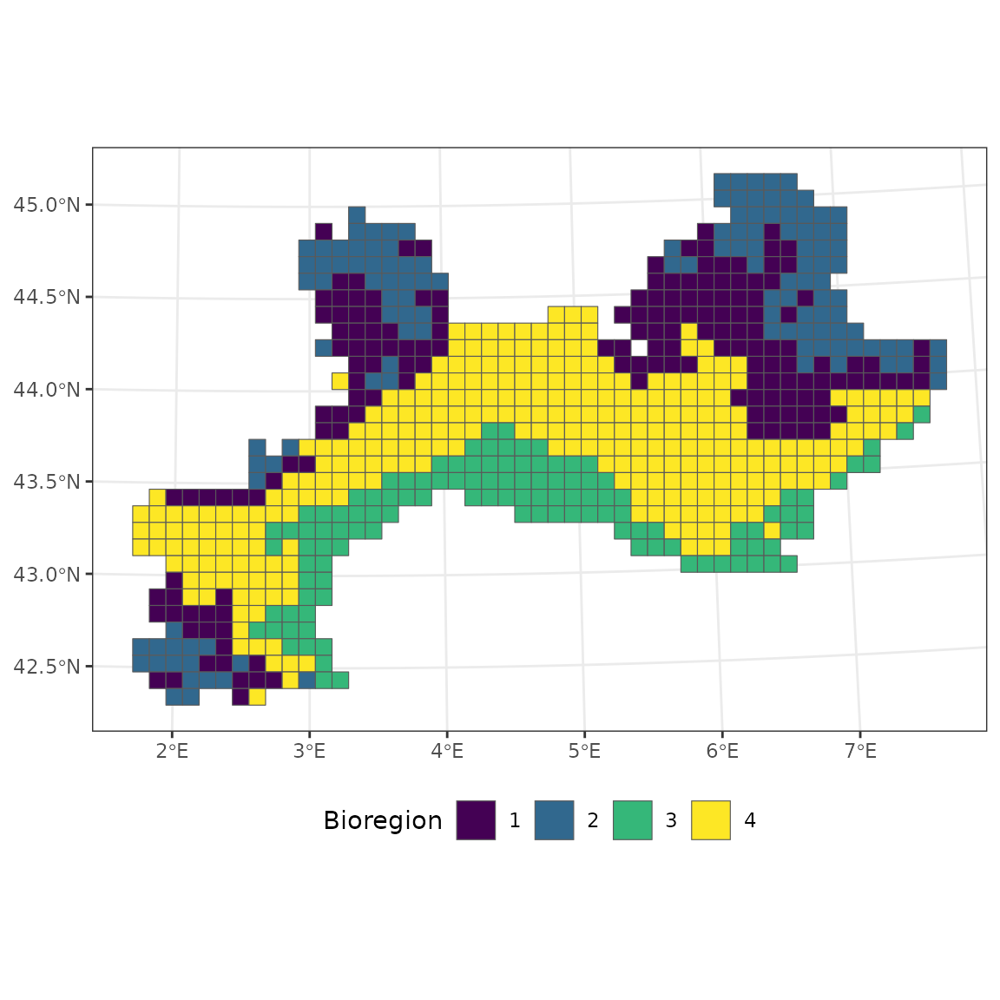

5.2 Summary metrics
Pierre Denelle, Boris Leroy and Maxime Lenormand
2026-01-18
Source:vignettes/a5_2_summary_metrics.Rmd
a5_2_summary_metrics.RmdIn this vignette, we aim to evaluate the contribution of individual
species and sites to each bioregion using the function
site_species_metrics(). We also show how various metrics at
the bioregion level can be computed, in particular with the function
bioregion_metrics().
1. Data
We use the vegetation dataset included in the
bioregion.
data("vegedf")
data("vegemat")
# Calculation of (dis)similarity matrices
vegedissim <- dissimilarity(vegemat, metric = c("Simpson"))
vegesim <- dissimilarity_to_similarity(vegedissim)2. Bioregionalization
We use the same three bioregionalization algorithms as in the visualization
vignette, i.e., non-hierarchical, hierarchical, and network
bioregionalizations. In addition, we include a network
bioregionalization algorithm based on a bipartite network, which assigns
a bioregion (or cluster) to both sites and species. We chose three
bioregions for the non-hierarchical and hierarchical
bioregionalizations.
# Non hierarchical bioregionalization
vege_nhclu <- nhclu_kmeans(vegedissim,
n_clust = 3,
index = "Simpson",
seed = 1)
vege_nhclu$cluster_info ## partition_name n_clust
## K_3 K_3 3
# Hierarchical bioregionalization
set.seed(1)
vege_hclu <- hclu_hierarclust(dissimilarity = vegedissim,
index = "Simpson",
method = "average",
n_clust = 3,
optimal_tree_method = "best",
verbose = FALSE)
vege_hclu$cluster_info## partition_name n_clust requested_n_clust output_cut_height
## 1 K_3 3 3 0.5625
# Network bioregionalization
set.seed(1)
vege_netclu <- netclu_walktrap(vegesim,
index = "Simpson")
vege_netclu$cluster_info ## partition_name n_clust
## K_3 K_3 3
# Bipartite network bioregionalization
install_binaries(verbose = FALSE)
vege_netclubip <- netclu_infomap(vegedf,
seed = 1,
bipartite = TRUE)
vege_netclubip$cluster_info## partition_name n_clust
## K_8 K_8 83. Species-to-bioregion & site-to-bioregion metrics
Several metrics evaluating the contribution of a species or a site to each bioregion can be computed and further aggregated to assess the relationship between a species or a site and the bioregionalization.
3.1 Species-to-bioregion metrics
Species-to-bioregion metrics are based on a bioregionalization
containing \(K\) bioregions
(vege_nhclu computed above for example) and its associated
site–species co-occurrence matrix vegemat
to compute three core terms, from which occurrence-based metrics are
derived.
-
\(n_{sb}\) is the number of sites
belonging to bioregion \(b\) in which
species \(s\) is present.
-
\(n_s\) is the total number of
sites in which species \(s\) is
present.
- \(n_b\) is the total number of sites belonging to bioregion \(b\).
nsb <- site_species_metrics(bioregionalization = vege_nhclu,
bioregion_metrics = "CoreTerms",
bioregionalization_metrics = NULL,
data_type = "occurrence",
cluster_on = "site",
comat = vegemat,
similarity = NULL,
index = NULL,
verbose = FALSE)
nsb$species_bioregions[1:10,]## Species Bioregion n_sb n_s n_b
## 1 10001 1 27 254 358
## 2 10001 2 97 254 150
## 3 10001 3 130 254 207
## 4 10002 1 5 19 358
## 5 10002 2 1 19 150
## 6 10002 3 13 19 207
## 7 10003 1 82 86 358
## 8 10003 2 0 86 150
## 9 10003 3 4 86 207
## 10 10004 1 205 438 358These core terms and associated metrics are computed when
data_type = "occurrence" (or
data_type = "both") and cluster_on = "site"
(or cluster_on = "both"). cluster_on = "site"
means that a bioregion is assigned to each site in
vege_nhclu.
Several metrics can be derived from these core terms.
Specificity (occurrence)
The specificity \(A_{sb}\) of species \(s\) for bioregion \(b\) (De Cáceres & Legendre, 2009) is defined as
\[A_{sb} = \frac{n_{sb}}{n_s}\]
and measures the fraction of occurrences of species \(s\) that belong to bioregion \(b\). It therefore reflects the uniqueness of a species to a particular bioregion.
NSpecificity (occurrence)
A normalized version that accounts for the size of each bioregion is also available, as defined in (De Cáceres & Legendre, 2009):
\[\bar{A}_{sb} = \frac{n_{sb}/n_b}{\sum_{k=1}^K n_{sk}/n_k}\]
It corresponds to a normalized specificity value that adjusts for differences in bioregion size.
Fidelity (occurrence)
The fidelity \(B_{sb}\) of species \(s\) for bioregion \(b\) (De Cáceres & Legendre, 2009) is defined as
\[B_{sb} = \frac{n_{sb}}{n_b}\]
and measures the fraction of sites in bioregion \(b\) where species \(s\) is present. It therefore reflects the frequency of occurrence of a species within a bioregion.
IndVal (occurrence)
The indicator value \(IndVal_{sb}\) of species \(s\) for bioregion \(b\) can be defined as the product of specificity and fidelity (De Cáceres & Legendre, 2009):
\[IndVal_{sb} = A_{sb} \times B_{sb}\]
This index quantifies the strength of association between a species and a bioregion by combining its specificity (uniqueness to that bioregion) and fidelity (consistency of occurrence within that bioregion). High IndVal values identify species that are both frequent and restricted to a single bioregion, making them good indicators of that region.
NIndVal (occurrence)
A normalized version of the indicator value is also available:
\[\bar{IndVal}_{sb} = \bar{A}_{sb} \times B_{sb}\]
This normalization adjusts for differences in bioregion size, allowing more comparable indicator values across regions with unequal sampling effort or extent.
Rho (occurrence)
The contribution index \(\rho\) can also be calculated following (Lenormand et al., 2019):
\[\rho_{sb} = \frac{n_{sb} - n_s\frac{n_b}{n}}{\sqrt{\frac{n_b(n - n_b)}{n - 1} \frac{n_s}{n}(1 - \frac{n_s}{n}) }}\]
This index measures the deviation between the observed number of occurrences of species \(s\) in bioregion \(b\) and the expected value under random association, providing a standardized measure of contribution to the bioregional structure.
nsb <- site_species_metrics(bioregionalization = vege_nhclu,
bioregion_metrics = c("Specificity", "NSpecificity",
"Fidelity",
"IndVal", "NIndVal",
"Rho",
"CoreTerms"),
bioregionalization_metrics = NULL,
data_type = "occurrence",
cluster_on = "site",
comat = vegemat,
similarity = NULL,
index = NULL,
verbose = FALSE)
nsb$species_bioregions[1:10,]## Species Bioregion n_sb n_s n_b Specificity_occ NSpecificity_occ Fidelity_occ
## 1 10001 1 27 254 358 0.10629921 0.05586158 0.075418994
## 2 10001 2 97 254 150 0.38188976 0.47897510 0.646666667
## 3 10001 3 130 254 207 0.51181102 0.46516332 0.628019324
## 4 10002 1 5 19 358 0.26315789 0.16739339 0.013966480
## 5 10002 2 1 19 150 0.05263158 0.07990244 0.006666667
## 6 10002 3 13 19 207 0.68421053 0.75270417 0.062801932
## 7 10003 1 82 86 358 0.95348837 0.92219928 0.229050279
## 8 10003 2 0 86 150 0.00000000 0.00000000 0.000000000
## 9 10003 3 4 86 207 0.04651163 0.07780072 0.019323671
## 10 10004 1 205 438 358 0.46803653 0.31989959 0.572625698
## IndVal_occ NIndVal_occ Rho_occ
## 1 0.0080169797 0.004213024 -15.645265
## 2 0.2469553806 0.309737230 8.383617
## 3 0.3214272129 0.292131557 9.721763
## 4 0.0036753896 0.002337896 -2.097447
## 5 0.0003508772 0.000532683 -1.704102
## 6 0.0429697432 0.047271276 3.842178
## 7 0.2183967780 0.211230003 8.947452
## 8 0.0000000000 0.000000000 -5.090898
## 9 0.0008987754 0.001503396 -5.293785
## 10 0.2680097446 0.183182724 -2.194976The abundance version of these metrics can also be computed when
data_type = "abundance" (or
data_type = "both"). In this case the core terms and
associated metrics are:
- \(w_{sb}\) is the sum of abundances of species s in sites of bioregion b.
-
\(w_s\) is the total abundance of
species s.
- \(w_b\) is the total abundance of all species present in sites of bioregion b.
wsb <- site_species_metrics(bioregionalization = vege_nhclu,
bioregion_metrics = "CoreTerms",
bioregionalization_metrics = NULL,
data_type = "abundance",
cluster_on = "site",
comat = vegemat,
similarity = NULL,
index = NULL,
verbose = FALSE)
wsb$species_bioregions[1:10,]## Species Bioregion w_sb w_s w_b
## 1 10001 1 85 6255 1889243
## 2 10001 2 3037 6255 1081424
## 3 10001 3 3133 6255 1271474
## 4 10002 1 81 295 1889243
## 5 10002 2 3 295 1081424
## 6 10002 3 211 295 1271474
## 7 10003 1 439 444 1889243
## 8 10003 2 0 444 1081424
## 9 10003 3 5 444 1271474
## 10 10004 1 2227 7476 1889243IndVal (abundance)
\[IndVal_{sb} = A_{sb} \times \frac{n_{sb}}{n_b}\] Note that the fidelity based on occurrence is used here (De Cáceres & Legendre, 2009).
NIndVal (abundance)
\[\bar{IndVal}_{sb} = \bar{A}_{sb} \times \frac{n_{sb}}{n_b}\]
Note that the fidelity based on occurrence is used here (De Cáceres & Legendre, 2009).
Rho (abundance)
\[\rho_{sb} = \frac{\mu_{sb} - \mu_s}{\sqrt{\left(\frac{n - n_b}{n-1}\right) \left(\frac{{\sigma_s}^2}{n_b}\right)}}\] where
- \(\mu_{sb} = \frac{w_{sb}}{n_b}\) the average abundance of species \(s\) in bioregion \(b\) (as in NSpecificity and NIndVal)
- \(\mu_s = \frac{w_s}{n}\) the average abundance of species \(s\)
- \(\sigma_s\) the associated standard deviation.
wsb <- site_species_metrics(bioregionalization = vege_nhclu,
bioregion_metrics = c("Specificity", "NSpecificity",
"Fidelity",
"IndVal", "NIndVal",
"Rho",
"CoreTerms"),
bioregionalization_metrics = NULL,
data_type = "abundance",
cluster_on = "site",
comat = vegemat,
similarity = NULL,
index = NULL,
verbose = FALSE)
wsb$species_bioregions[1:10,]## Species Bioregion w_sb w_s w_b Specificity_abund NSpecificity_abund
## 1 10001 1 85 6255 1889243 0.01358913 0.006665761
## 2 10001 2 3037 6255 1081424 0.48553157 0.568417434
## 3 10001 3 3133 6255 1271474 0.50087930 0.424916804
## 4 10002 1 81 295 1889243 0.27457627 0.178777214
## 5 10002 2 3 295 1081424 0.01016949 0.015803023
## 6 10002 3 211 295 1271474 0.71525424 0.805419763
## 7 10003 1 439 444 1889243 0.98873874 0.980682689
## 8 10003 2 0 444 1081424 0.00000000 0.000000000
## 9 10003 3 5 444 1271474 0.01126126 0.019317311
## 10 10004 1 2227 7476 1889243 0.29788657 0.187592363
## Fidelity_abund IndVal_abund NIndVal_abund Rho_abund
## 1 4.499157e-05 1.024878e-03 0.0005027250 -6.805816
## 2 2.808334e-03 3.139771e-01 0.3675766076 4.731084
## 3 2.464069e-03 3.145619e-01 0.2668559641 3.255761
## 4 4.287432e-05 3.834864e-03 0.0024968885 -1.446975
## 5 2.774120e-06 6.779661e-05 0.0001053535 -1.568655
## 6 1.659491e-04 4.491935e-02 0.0505819175 3.003468
## 7 2.323682e-04 2.264709e-01 0.2246256438 4.175535
## 8 0.000000e+00 0.000000e+00 0.0000000000 -2.204186
## 9 3.932444e-06 2.176089e-04 0.0003732814 -2.624519
## 10 1.178779e-03 1.705775e-01 0.1074202078 -5.6240223.2 Species-to-bioregionalization metrics
Based on all these metrics, it is also possible to derive aggregated
metrics.
For now, only the participation coefficient \(P_s\) of a species \(s\) to the bioregionalization as described
in (Denelle et al., 2020) is
proposed, available in both its occurrence and abundance versions.
P (abundance)
\[ P_s = 1 - \sum_{k=1}^K \left(\frac{w_{sk}}{w_s}\right)^2 \]
These metrics measure how evenly a species is distributed among bioregions. There are ranging from 0 to 1. Values close to 0 indicate that the species is largely restricted to a single bioregion, while values close to 1 indicate that the species is evenly distributed across multiple bioregions.
ps <- site_species_metrics(bioregionalization = vege_nhclu,
bioregion_metrics = NULL,
bioregionalization_metrics = "P",
data_type = "both",
cluster_on = "site",
comat = vegemat,
similarity = NULL,
index = NULL,
verbose = FALSE)
ps$species_bioregionalization[1:10,]## Species P_occ P_abund
## 1 10001 0.58091016 0.51319436
## 2 10002 0.45983380 0.41291583
## 3 10003 0.08869659 0.02226889
## 4 10004 0.59334668 0.55362167
## 5 10005 0.53267897 0.50874080
## 6 10006 0.59944565 0.48784442
## 7 10007 0.60353798 0.59088266
## 8 10008 0.61624257 0.53496844
## 9 10009 0.44444444 0.44444444
## 10 10010 0.18447026 0.115654103.3 Site-to-species cluster & site-to-species clustering metrics
Dual metrics can also be computed when a cluster or bioregion has
been assigned
to each species in a bioregionalization (as is the case for
vege_netclubip
computed above). In this case, setting
cluster_on = "species" (orcluster_on = "both") allows computing site-to-species
cluster and/or
site-to-species clustering metrics. These metrics are derived from the
same
principles as above, based on three core terms:
-
\(n_{gc}\) is the number of species
belonging to cluster \(c\) that are
present in site \(g\).
-
\(n_g\) is the total number of
species present in site \(g\).
- \(n_c\) is the total number of species belonging to cluster \(c\).
and their abundance counterparts.
gc <- site_species_metrics(bioregionalization = vege_netclubip,
bioregion_metrics = c("Specificity", "NSpecificity",
"Fidelity",
"IndVal", "NIndVal",
"Rho",
"CoreTerms"),
bioregionalization_metrics = "P",
data_type = "both",
cluster_on = "species",
comat = vegemat,
similarity = NULL,
index = NULL,
verbose = FALSE)
gc$site_clusters[1:10,]## NULL
gc$site_clustering[1:10,]## NULL3.4 Site-to-bioregion metrics
A final type of metrics can be computed when a bioregionalization
containing
\(K\) bioregions (for example,
vege_nhclu computed above) and its associated
site similarity matrix (vegesim) are available.
These metrics include the average similarity of each site to the
sites of
each bioregion (\(MeanSim\)) and the
associated standard deviation (\(SdSim\)).
When computing the average similarity, the focal site itself is not
included
in the calculation for its own bioregion.
MeanSim
Let \(g\) be a site and \(b\) a bioregion with sites \(g' \in b\), then:
\[MeanSim_{gb} = \frac{1}{n_b - \delta_{g \in b}} \sum_{g' \in b, g' \neq g} sim_{gg'}\] where \(sim_{gg'}\) is the similarity between sites \(g\) and \(g'\), \(n_b\) is the number of sites in bioregion \(b\), and \(\delta_{g \in b}\) is 1 if site \(g\) belongs to bioregion \(b\) (to exclude itself), 0 otherwise.
SdSim
The standard deviation of similarities of site \(g\) to bioregion \(b\) is:
\[SdSim_{gb} = \sqrt{\frac{1}{n_b - 1 - \delta_{g \in b}} \sum_{g' \in b, g' \neq g} \left( sim_{gg'} - MeanSim_{gb} \right)^2}\] where \(sim_{gg'}\) is the similarity between sites \(g\) and \(g'\), \(n_b\) is the number of sites in bioregion \(b\), and \(\delta_{g \in b}\) is 1 if site \(g\) belongs to bioregion \(b\) (to exclude itself), 0 otherwise.
3.5 Site-to-bioregionalization metrics
Based on \(MeanSim\), it is possible
to derive aggregated metrics that assess
how well a site fits within its assigned bioregion relative to
others.
For now, only the Silhouette index (Rousseeuw, 1987) is proposed.
Silhouette
The Silhouette index for a site \(g\) is defined as:
\[Silhouette_g = \frac{a_g - b_g}{\max(a_g, b_g)}\]
where:
-
\(a_g\) is the average similarity
of site \(g\) to all other sites in its
own bioregion,
- \(b_g\) is the average similarity of site \(g\) to all sites belonging to the nearest bioregion.
This index reflects how strongly a site is associated with its assigned bioregion relative to the most similar alternative bioregion, ranging from -1, when the site may be misassigned (i.e., more similar to another bioregion than its own), to 1, when the site is well matched to its own bioregion, and around 0 when the site lies near the boundary between bioregions.
4. Bioregion metrics & spatial coherence
For each bioregion, we calculate the number of sites it contains and the number of species present in those sites. The number and proportion of endemic species are also computed. Endemic species are defined as those occurring only in sites assigned to a particular bioregion.
bioregion_summary <- bioregion_metrics(bioregionalization = vege_nhclu,
comat = vegemat)
bioregion_summary## Bioregion Site_number Species_number Endemics Percentage_Endemic
## 1 2 150 2688 133 4.947917
## 2 3 207 3090 58 1.877023
## 3 1 358 2821 407 14.427508We use the metric of spatial coherence as in (Divíšek et al., 2016), except that we replace the number of pixels per bioregion with the area of each coherent part.
The spatial coherence is expressed in percentage, and has the following formula:
\[SC_j = 100 \times \frac{LargestPatch_j}{Area_j}\]
where \(j\) is a bioregion.
Here is an example with the vegetation dataset.
# Spatial coherence
vegedissim <- dissimilarity(vegemat)
hclu <- nhclu_kmeans(dissimilarity = vegedissim, n_clust = 4)
vegemap <- map_bioregions(hclu, vegesf, write_clusters = TRUE, plot = FALSE)
bioregion_metrics(bioregionalization = hclu, comat = vegemat, map = vegemap,
col_bioregion = 2) ## Bioregion Site_number Species_number Endemics Percentage_Endemic Coherence
## 1 2 128 2527 90 3.561535 49.21875
## 2 1 169 2983 45 1.508548 56.21302
## 3 4 298 2936 56 1.907357 98.99329
## 4 3 120 2262 67 2.961981 79.16667The bioregion 4 is almost constituted of one homogeneous block, which is why the spatial coherence is very close to 100 %.
ggplot(vegemap) +
geom_sf(aes(fill = as.factor(K_4))) +
scale_fill_viridis_d("Bioregion") +
theme_bw() +
theme(legend.position = "bottom")